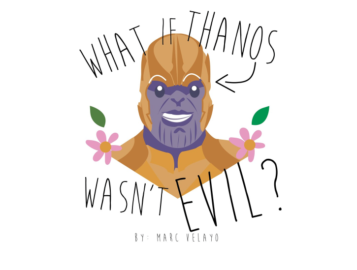

CLICK HERE TO CHECK OUT THE WEBSITE!
I’ve always believed that there is always something good hidden in every situation, place, person or just anything in life. As human beings, we often encounter different things that brings us down, whether it’s physically, spiritually or mentally. I believe that during these worst, painful times-- that’s when we best see the light. The shining light that could brighten up the pathways that we human beings need to walk on. This light enables us to constantly change, constantly move on to heights that could help us be better people. My final project, which is titled: What If Thanos Isn’t Evil?, It depicts Thanos, one of the most hated villains of all time, in a different light. Thanos, an evil creature from the fictional, comic universe of The Avengers, wanted to collect all the infinity stones to diminish half the universe. Through this work, I was able to create the opposite outcome he wanted. I created an opposite character who wanted to diminish all the destruction that happens in our world. Art is a very powerful weapon, that could create and change perception. It’s a strong weapon that could be used to alter emotions and explore new ideals. The projects I have created tackles different stages of change within my artistry. From creating glitch art, coding using processing and creating net art-- these show my ability in innovation, love for color and interest in detail. My style is somewhat broad and it depends on the project or theme I am involved in. I hope my final project which features Thanos, creates a new perspective-- that even the biggest, meanest guy could somewhat change for the better.
